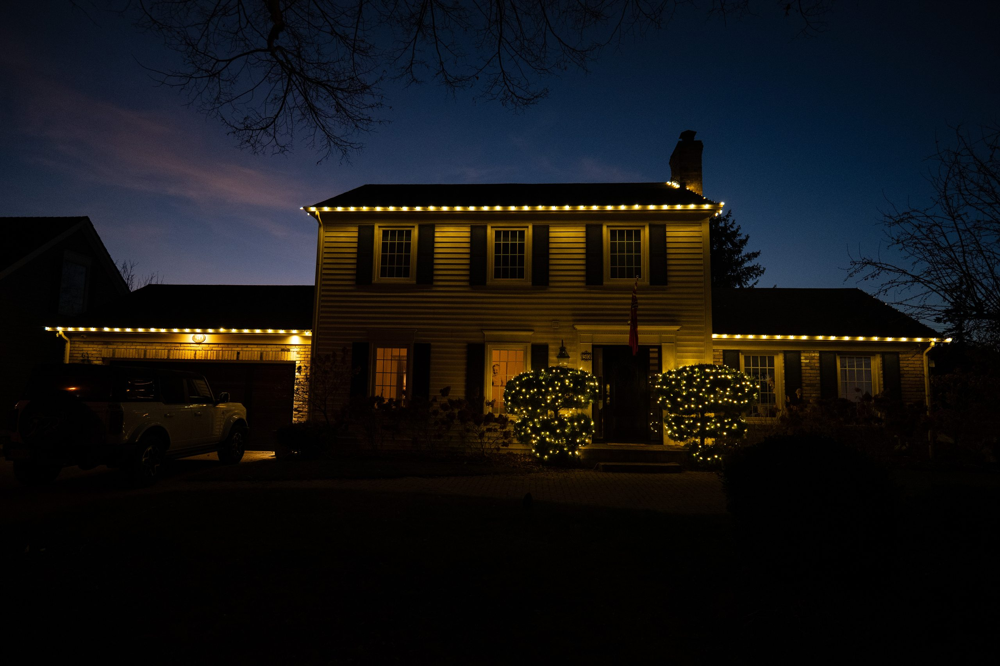
Niagara, Burlington, and Oakville
Your lights
in a new way.
Precision Christmas Lighting supplies the lamps, cuts them to the building, and stays on the job through take-down. The season should describe the architecture, not hide it.
Our work
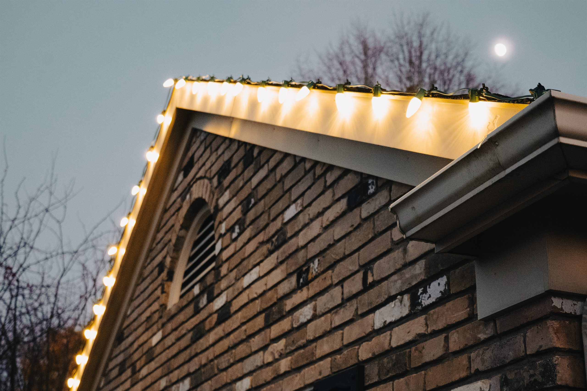
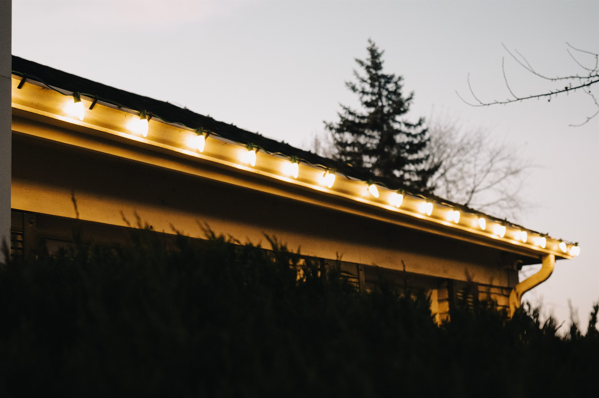
The eaves met at the peak and stayed that way through January. They took the whole run down the week we asked.
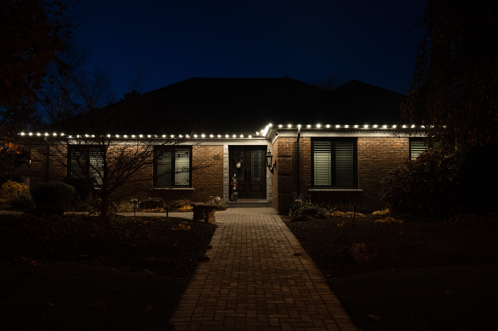
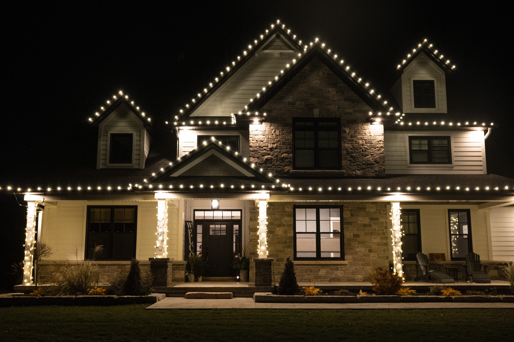
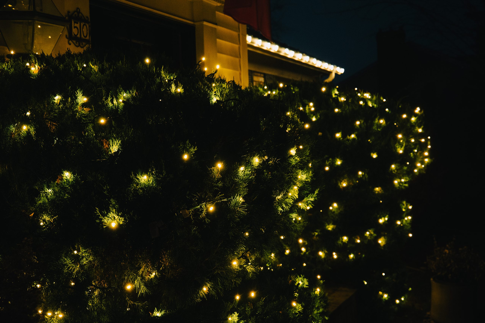
Warm white on the brick, and on the shrubs by the door. The timer was set again before the weekend guests arrived.
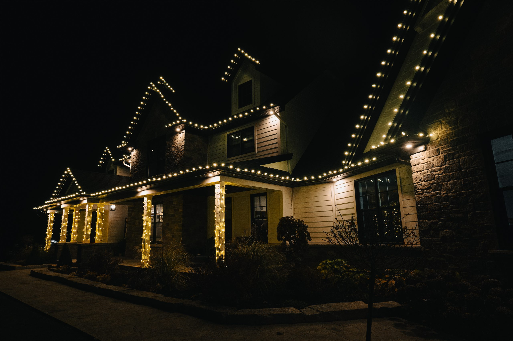
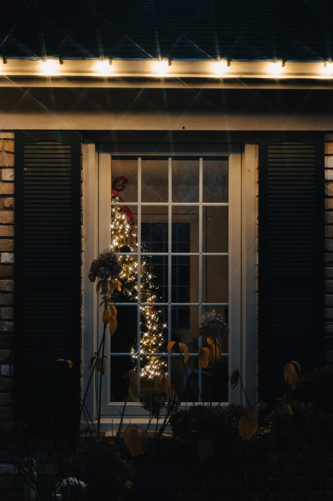
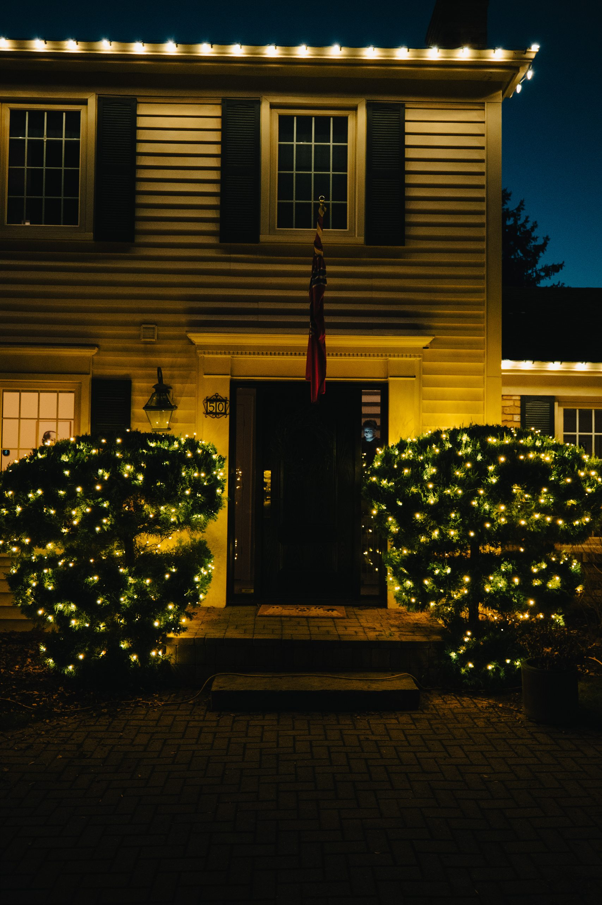
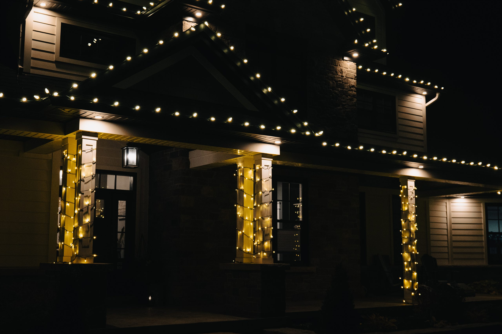
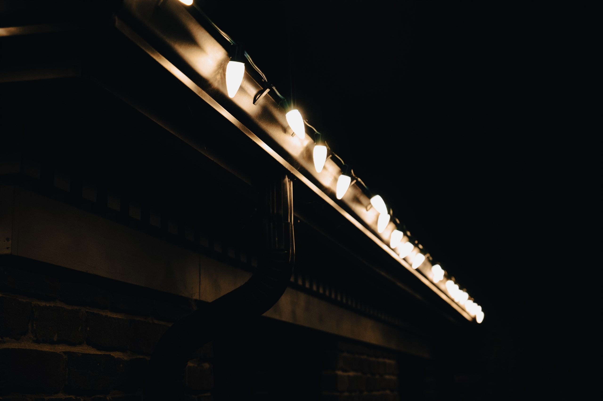
Every length was cut to the fascia. Nothing looped back, and the bins in January were labelled by elevation.
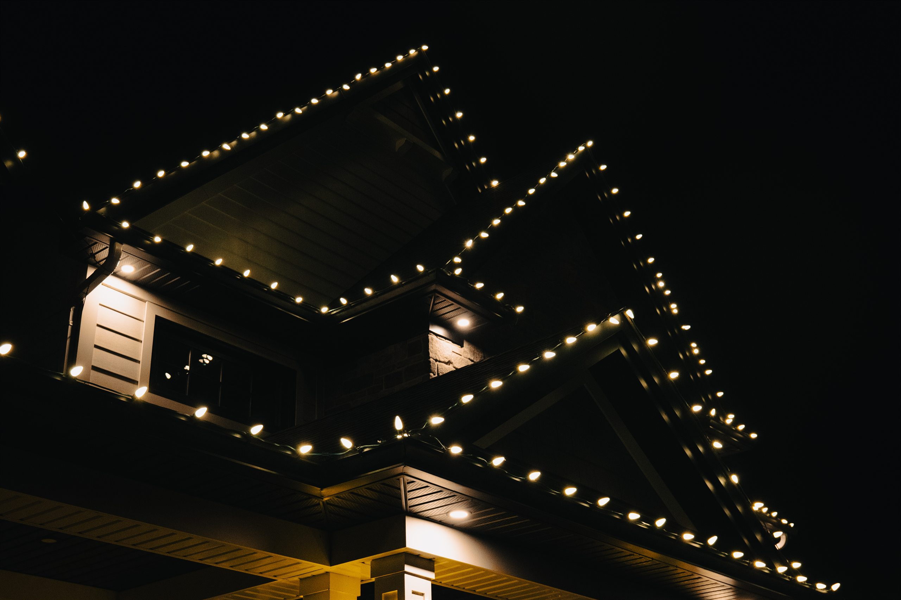
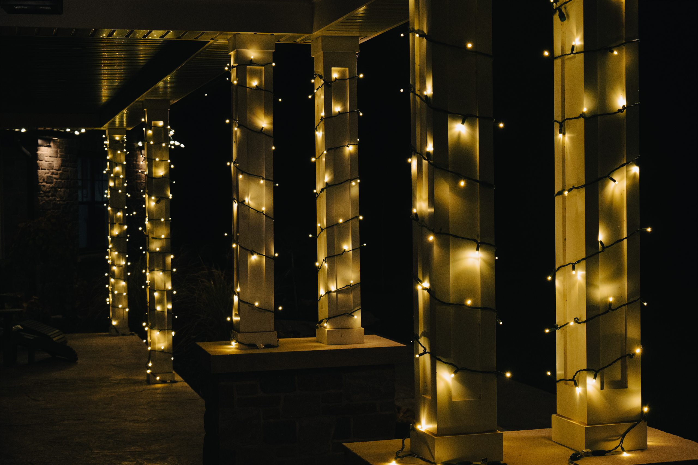
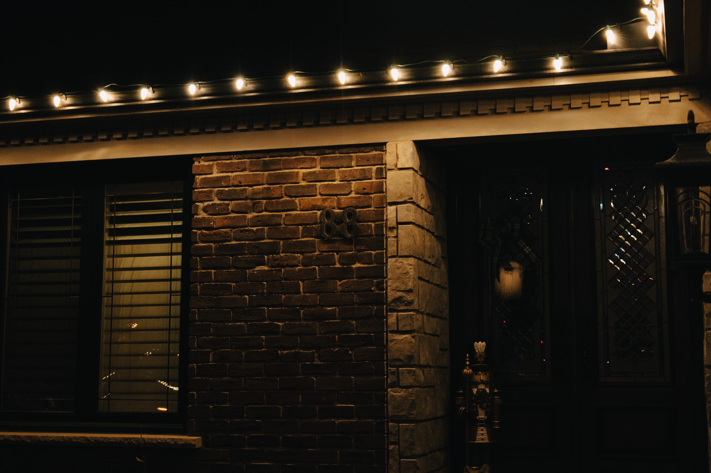
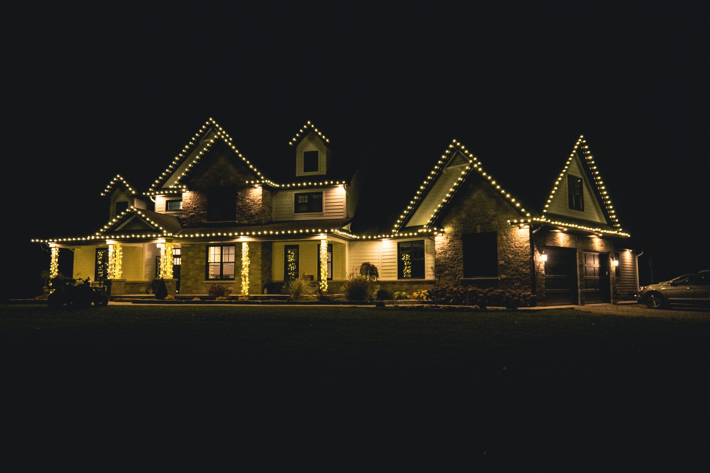
How it works
From the first strand to storage.
The same five steps on every property. What changes is the measurement.
-
01
Supply lights
Commercial-grade LEDs, chosen for the surface they touch. Warm white on brick and wood. A tighter white on modern cladding. Colour only where a tree can hold it.
-
02
Custom cut
Eaves, peaks, and columns are measured before a strand is opened. Each run is cut to that length so the corners meet and nothing loops back.
-
03
Install
Clips follow the architecture. Fasteners stay off the face of the fascia. The line is marked before the first bulb goes up, so it reads straight from the street.
-
04
Maintain throughout season
A mid-season pass covers outages, wind, and timers that drift. A dark section is replaced before the next weekend.
-
05
Take down and store
After the season the lights come down, get tested, and are coiled by run. Next year starts from a labelled kit.